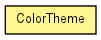

toxi.color
Class ColorTheme
java.lang.Object
 toxi.color.ColorTheme
toxi.color.ColorTheme
public class ColorTheme
- extends java.lang.Object

A ColorTheme is a weighted collection of ColorRanges used to define
custom palettes with a certain balance between individual colors/shades. New
theme parts can be added via textual descriptors referring to one of the
preset ColorRanges and/or NamedColors: e.g.
"warm springgreen". For each theme part a weight has to be specified. The
magnitude of the weight value is irrelevant and is only important in relation
to the weights of other theme parts. For example: Theme part A with a weight
of 0.5 will only have 1/20 of the weight of theme part B with a weight of
5.0...
|
Constructor Summary |
ColorTheme(java.lang.String name)
|
| Methods inherited from class java.lang.Object |
equals, getClass, hashCode, notify, notifyAll, toString, wait, wait, wait |
ColorTheme
public ColorTheme(java.lang.String name)
addRange
public ColorTheme addRange(ColorRange range,
ReadonlyTColor col,
float weight)
addRange
public ColorTheme addRange(java.lang.String descriptor,
float weight)
getColor
public TColor getColor()
getColors
public ColorList getColors(int num)
- Creates a
ColorList of TColors based on the theme's
ranges and balance defined by their weights
- Parameters:
num - number of colors to create
- Returns:
- new list
getName
public java.lang.String getName()
- Returns:
- the theme's name